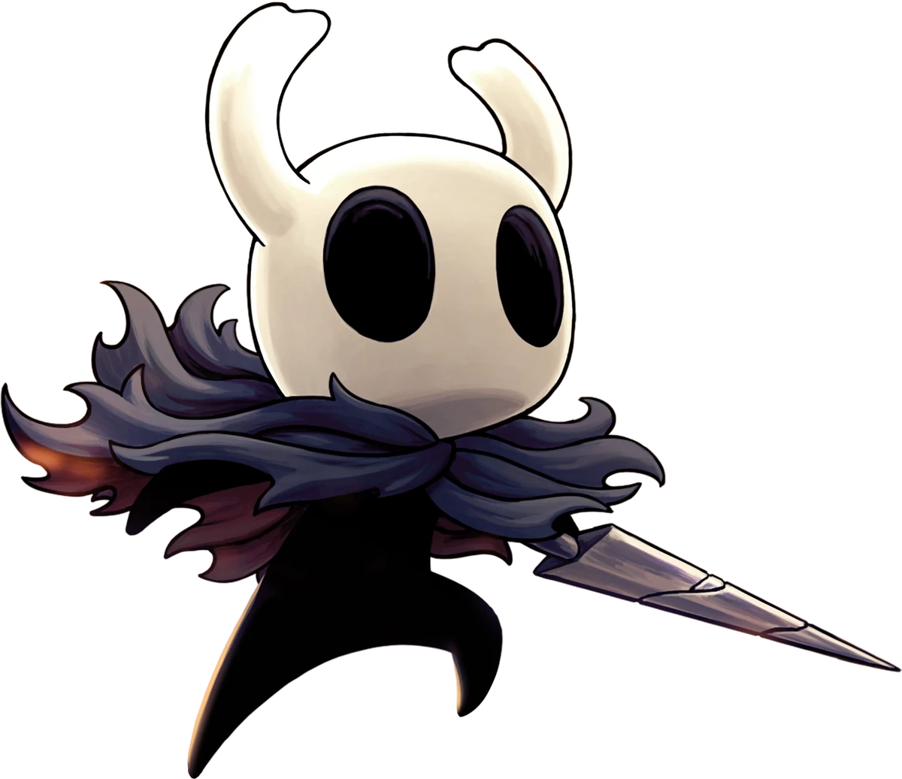
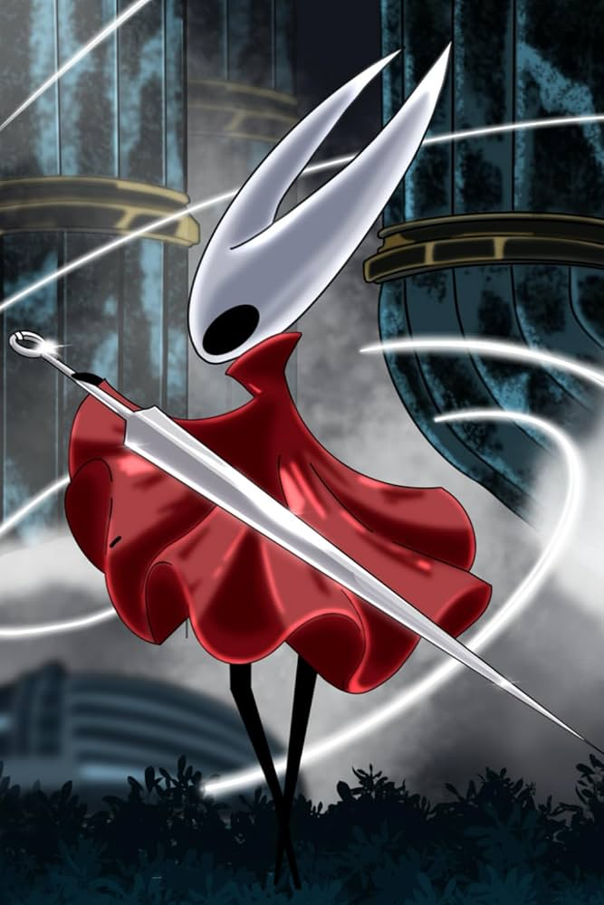
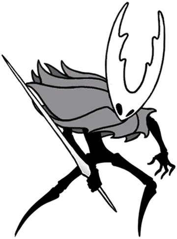
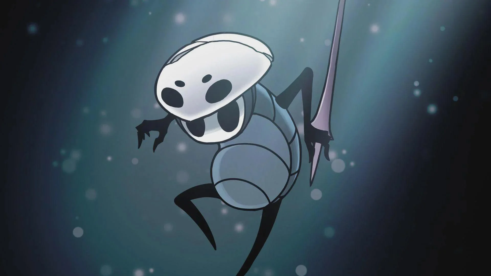
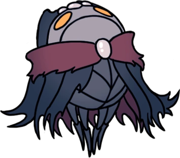
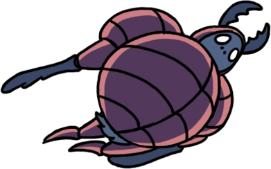

KNIGHT
Um pequeno inseto em busca de respostas e da cura para a infecção.

Um reino subterrâneo em ruínas, habitado por criaturas misteriosas, antigos guerreiros e segredos esquecidos.

Um pequeno inseto em busca de respostas e da cura para a infecção.

Uma protetora veloz que domina a seda.

O soberano que ergueu um reino brilhante e condenado.

O receptáculo aperfeiçoado escolhido para conter a Radiância.

Um viajante curioso que carrega memórias de tempos antigos.

O mestre da trupe que dança entre chamas e pesadelos.

Um inseto que domina os feitiços da Cidade das Lágrimas.

Um guerreiro leal que protege os canais de esgoto e enfrenta invasores.

Um inseto que luta usando uma armadura roubada.

Um aventureiro convencido que afirma ser um grande guerreiro.

Um antigo líder dos Louva-a-Deus que foi consumido pela infecção.

O guardião leal que protege a colmeia.